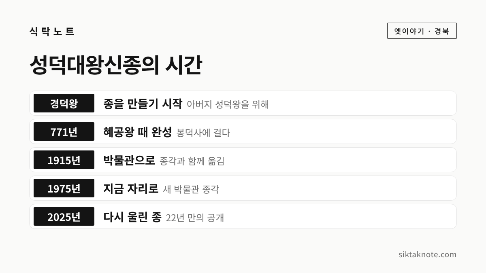

에밀레종 전설 — 성덕대왕신종에 얽힌 이야기와 과학이 밝힌 사실

3줄 요약
- 에밀레종은 771년 신라 혜공왕 때 완성된 성덕대왕신종의 다른 이름으로, 지금 국립경주박물관에 있습니다.
- 아이를 쇳물에 넣었다는 전설은 옛 기록에는 없고, 1998년 성분 분석에서도 뼈에 들어 있는 인이 검출되지 않았다고 해요.
- 소리가 커졌다 작아졌다 길게 이어지는 맥놀이로 이름난 종이고, 2025년에는 22년 만에 시민 앞에서 다시 울렸습니다.
행사 정보
- 장소
- 국립경주박물관 야외 종각 (경상북도 경주시 일정로 186)
- 관람 시간
- 평일 10:00~18:00, 주말·공휴일 10:00~19:00 (입장은 30분 전까지)
- 휴관일
- 1월 1일, 설날·추석 당일
- 관람료
- 무료 (유료 특별전은 따로)
- 지정
- 국보, 1962년 지정 (옛 지정번호 국보 제29호)
2026.10.09 확인 기준. 관람 시간은 관광 안내 사이트 기준이에요. 바뀔 수 있으니 가시기 전에 국립경주박물관 누리집에서 한 번 더 확인하세요.
에밀레, 에밀레 하고 운다는 종
경주 국립경주박물관 마당 종각에는 커다란 종이 하나 걸려 있습니다. 정식 이름은 성덕대왕신종인데요. 많은 분들에게는 에밀레종이라는 이름이 더 익숙하실 겁니다. 종을 칠 때마다 아이가 엄마를 부르는 듯한 '에밀레' 소리가 난다는 슬픈 전설 때문이죠.
한국민족문화대백과사전은 이 종을 '우리나라에 남아 있는 최대의 거종'이라고 설명합니다. 오늘은 전설 속 이야기와, 그 뒤에 기록과 과학으로 확인된 사실을 나란히 놓고 들려 드릴게요.

전설은 이렇게 전해집니다
널리 알려진 줄거리는 이렇습니다. 신라 사람들이 큰 종을 만들려고 했는데, 아무리 다시 부어도 종이 제대로 울리지 않았다고 해요. 그러다 어린아이를 끓는 쇳물에 넣고 나서야 종이 완성되었다는 이야기입니다. 그 뒤로 종을 칠 때마다 '에밀레, 에밀레' 하며 어미를 원망하는 듯한 소리가 났다고 전해지는데요. 이야기에 따라서는 시주를 다니던 스님에게 가난한 어머니가 아이를 내주었다는 장면이 덧붙기도 한다고 알려져 있습니다.
듣기만 해도 마음이 아픈 이야기입니다. 그런데 이 전설이 실제 일이었는지는 따로 살펴볼 필요가 있습니다.

종이 만들어지기까지
종이 만들어진 과정은 기록이 비교적 또렷합니다. 한국민족문화대백과사전에 따르면 신라 경덕왕이 아버지 성덕왕의 공덕을 기리려고 종을 만들고자 했지만 뜻을 이루지 못했고, 아들 혜공왕 때인 771년에 완성되었습니다. 그래서 이름도 성덕대왕신종이죠. 종이 처음 걸린 절의 이름을 따서 봉덕사종이라고도 불렀습니다.

종 몸에는 글이 새겨져 있는데요. 백과사전은 이 명문이 서문 630자와 명 200자로 이루어져 있다고 설명합니다. 성덕왕의 공덕을 기리고, 종소리로 나라가 평안하고 백성이 편안하기를 바라는 내용이라고 해요. 『삼국유사』와 명문에는 경덕왕이 구리 12만 근을 내놓았다고 적혀 있다고 합니다.
그 뒤 봉덕사가 물난리로 폐사되자 종은 영묘사로 옮겨졌고, 경주 봉황대 곁에 종각을 지어 보호하기도 했습니다. 1915년 8월에 종각과 함께 박물관으로 옮겨졌고, 1975년 국립경주박물관이 지금 자리에 새로 지어지면서 그 마당으로 다시 옮겨졌다고 해요.
크기도 대단합니다. 백과사전 기준으로 종 높이는 333cm, 입지름은 227cm입니다. 경주시 소식지에 따르면 1997년에 직접 무게를 재 보니 18,900kg, 약 18.9톤이었다고 합니다.

과학이 밝힌 사실
전설이 사실이라면 종의 쇳물에 흔적이 남았을 텐데요. 사람의 뼈에는 인이라는 성분이 들어 있어서, 성분을 분석하면 확인할 수 있다고 합니다.
언론 보도에 따르면 1998년 국립경주박물관이 성덕대왕신종의 성분을 분석했는데, 구리와 주석이 주성분이었고 인은 검출되지 않았습니다. 코리아중앙데일리는 구리가 약 85%, 주석이 약 14%였다고 전했어요. 여기에 납과 아연, 황, 철 같은 성분이 아주 조금 들어 있었다고 합니다. 범종을 연구해 온 최응천 교수는 세계일보 인터뷰에서 사람을 넣은 쇳물로는 종이 깨져 완성할 수 없다고 설명하기도 했습니다.
전설이 언제 생겼는지에 대한 연구도 있습니다. 코리아중앙데일리 보도에 따르면 『삼국유사』를 비롯한 고려와 조선의 기록에는 아이를 바쳤다는 이야기가 나오지 않는다고 해요. 근대에 들어 외국인이 남긴 기록에 '에밀레'와 비슷한 소리 이야기가 처음 보이고, 일제강점기의 동화와 희곡, 그 뒤의 영화를 거치며 이 종의 이야기로 굳어졌다는 분석이 경주시 소식지에 실렸습니다. 그래서 요즘은 에밀레종보다 성덕대왕신종이라는 이름을 쓰자는 목소리가 많습니다.
종에 새겨진 비천상
종 몸을 가까이에서 보시면 하늘을 나는 사람의 모습이 새겨져 있는데요. 이를 비천상이라고 합니다. 한국민족문화대백과사전에 따르면 비천상은 모두 넷으로, 둘씩 서로 마주 보고 있습니다. 연꽃 자리 위에 무릎을 세우고 앉아 공양을 올리는 모습이라고 해요.
종을 치는 자리인 당좌에는 연꽃무늬가 둘 있고, 종 아래쪽 테두리는 여덟 굽이 꽃 모양처럼 물결칩니다. 종 꼭대기에는 소리와 관련된 것으로 알려진 대롱 모양의 음통이 있는데, 층마다 연꽃잎 무늬로 꾸며져 있다고 해요. 글씨를 종 몸에 도드라지게 새긴 것도 신라 종에서는 드문 특징이라고 합니다.
길게 이어지는 소리, 맥놀이
성덕대왕신종이 특히 이름난 건 소리 때문인데요. 종을 치면 소리가 커졌다 작아졌다를 되풀이하며 끊어질 듯 길게 이어집니다. 이것을 맥놀이라고 합니다.
언론 보도에 따르면 맥놀이는 종의 아주 작은 비대칭에서 생기는 울림 현상이라고 해요. 최응천 교수는 이 종이 우리나라 범종 가운데 가장 긴 여운을 가졌다고 평가했습니다. 들으면 마음이 차분해진다는 분들이 많은 이유가 여기에 있는 것 같습니다.
22년 만에 다시 울린 종
이 종은 한동안 직접 칠 수 없었습니다. 보도에 따르면 종을 보호하려고 1992년에 연말 정기 타종을 멈췄고, 2003년 개천절 타종 뒤로는 녹음된 소리로 대신해 왔다고 해요.
그러다 2025년 9월 24일, 국립경주박물관이 종의 상태를 살피는 타음 조사를 시민에게 공개하면서 22년 만에 다시 종소리가 울렸습니다. 이때 함께한 시민은 종이 완성된 해에 맞춰 771명이었다고 하는데요. 2026년 9월 15일에도 같은 방식의 공개 행사가 열려 종을 12번 쳤다고 보도되었습니다. 이 조사는 2029년까지 해마다 이어질 계획이고, 지금까지 큰 이상은 발견되지 않았다고 해요. 앞으로는 온도와 습도를 조절할 수 있는 실내 전시관도 추진되고 있다고 합니다.
국립경주박물관에서 만나기
성덕대왕신종은 경주시 일정로 186 국립경주박물관 야외 종각에 있습니다. 관광 안내 자료로는 평일 오전 10시부터 오후 6시까지, 주말과 공휴일은 오후 7시까지 관람할 수 있고, 입장료는 무료입니다. 쉬는 날은 1월 1일과 설날·추석 당일이에요.
종각 앞에서 종을 천천히 한 바퀴 돌아보시는 걸 권해 드립니다. 비천상과 연꽃무늬를 하나씩 찾아보면 1,200년도 더 된 신라 장인의 솜씨가 가깝게 느껴질 것 같습니다. 공개 타종 행사는 해마다 신청을 받아 열리니, 박물관 소식을 미리 살펴 두시면 좋겠습니다.
같은 경북의 옛이야기로는 연오랑 세오녀 이야기도 있습니다. 해와 달이 빛을 잃었다는 포항 바닷가의 전설이니 함께 읽어 보세요. 성덕대왕신종보다 앞서 만들어진 신라 종이 남아 있는 오대산 상원사 이야기도 이어서 보시면 좋겠습니다.
이 글은 한국민족문화대백과사전, 경주시 소식지, 언론 보도에서 확인되는 내용을 바탕으로 새로 풀어 쓴 것입니다. 2026년 10월 9일 기준입니다.